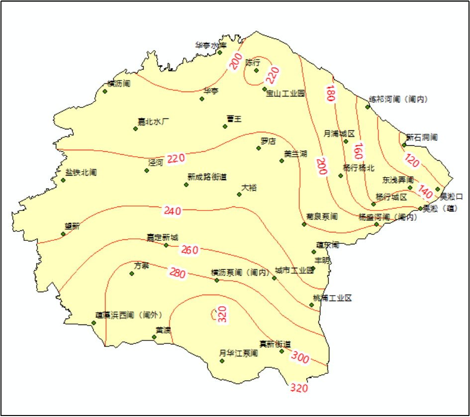

1、潮位特性分析
2021年受第6号台风“烟花”和天文大潮影响，上海出现“风暴潮洪”四碰头，7月26~28日，沿江沿海出现了0.6~1.70米的风暴潮增水。河口吴淞站最高高潮位5.55m，超出警戒0.75m，居历史第四位，最高潮位出现时间于7月26日1:15:00，风暴潮影响期内最高低潮位2.51m，最高低潮位出现时间于7月25日20:30:00。
“烟花”风暴潮影响期吴淞口站实测潮位过程
2、暴雨特性分析
受台风“烟花”影响，上海全市普降大到暴雨，局部大暴雨。7月23~28日，全市平均降雨286.1mm。大暴雨主要集中在上游金山区、奉贤区、松江区、青浦区和闵行区。全市654个测站中，全市单站雨量最大为金山区金山站（气象）506.7mm，其次为金山区钱站498.0mm。
嘉宝北片内单站雨量最大为新槎浦闸站267.5mm，其次为杨盛河闸（闸内）站254mm，嘉宝北片“利奇马”台风期间总面雨量182.4mm。 。
“烟花”台风嘉宝北片面雨量过程

“烟花”台风嘉宝北片雨量等值线图
3、河网调蓄能力分析
采用2021年雨量站、水（潮）位站实时监测资料，模拟计算2021年“烟花”台风期（23日08时～28日08时）嘉宝北片槽蓄容量变化与外潮顶托、雨型关系。
台风“烟花”嘉宝北片蓄量变化与外潮顶托关系
台风“烟花”嘉宝北片蓄量变化与雨型关系
台风“烟花”对上海的风雨影响从7月23日起一直持续到28日，吴淞口站最高高潮位5.55m，约20年一遇，出现时间为7月26日1:15:00，从7月25日起嘉宝北片出现明显持续性降雨，嘉宝北片最大1h面雨量为10.65mm，出现时间为7月28日7:00:00，嘉宝北片从7月23日起开始预降，其中罗店站最低水位2.10m、最高水位3.38m，嘉定南门站最低水位2.31m、最高水位3.51m。由上图可见，台风“烟花”期间嘉宝北片河网槽蓄容量整体上升速度缓慢，上升较快时段集中在外江潮位顶托及降主雨峰峰后。
“烟花”台风期初槽蓄容量为114.34百万m3，警戒水位对应可调蓄容量为40.13百万m3，保证水位对应可调蓄容量为78.28百万m3；“烟花”台风期间最低槽蓄容量112.81百万m3、最高槽蓄容量164.31百万m3，河网槽蓄容量变幅为51.5百万m3，保证水位对应可调蓄容量28.31百万m3。